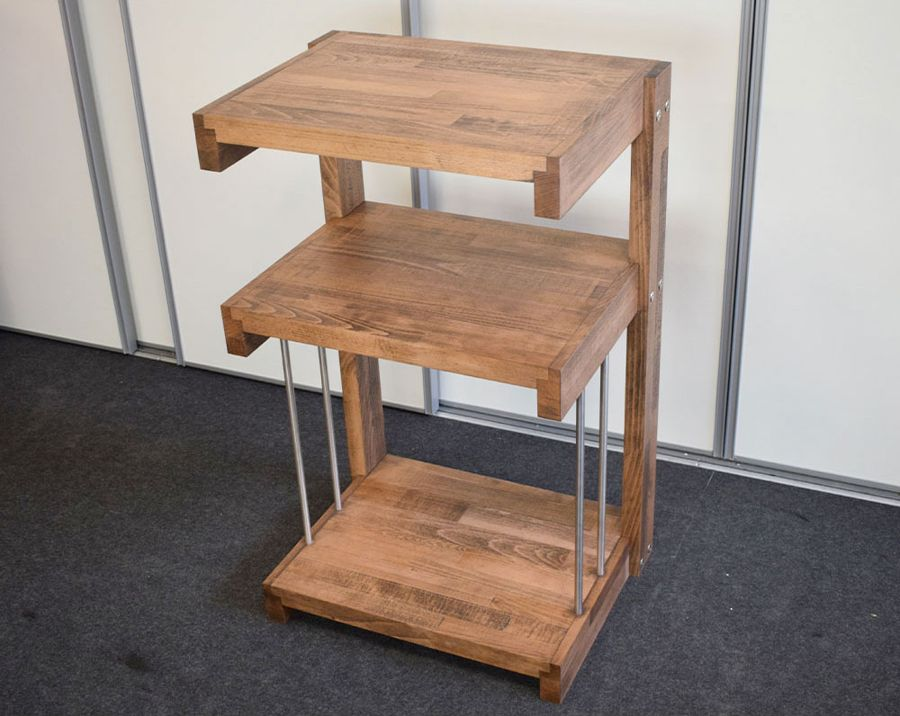
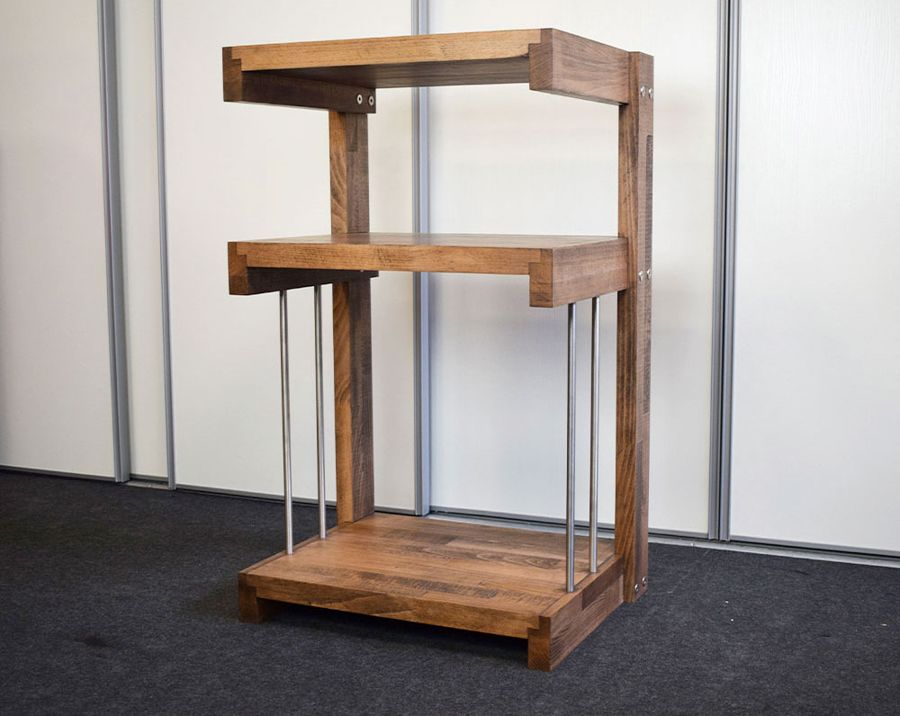

Extrasound Vinyl Solid wood turntable cabinet
The solid wood hi-fi rack for people who listen to vinyl: the turntable on top, the amplifier in the middle and up to 90 records below.
Wood
- Solid wood
- Up to 90 LPs
- 23 kg
Woods on requestSee the woods
- Oak
- Cherry
- Ash
- Doussié
- Wenge
€599 in beech · €799 in American walnutprices on extrasound.it
How I build it.
The Vinyl is made of solid wood and comes in two versions.
It's a finished model: you'll find it ready in our showroom in Cesena.
A level for everything.
Three levels designed around the weight and size of your equipment.

Electronics first, then the cabinet.
When I design a piece of furniture I always start from the equipment: I take its measurements and build the spaces around it. With the Vinyl there were the records too. First I made the compartment that keeps them upright, with steel rods for them to lean on. Then I divided the remaining space between the amplifier and the turntable.
The turntable goes on the top, where it has all the room it needs. The measurement I worked on most is the depth: the turntable sits comfortably and there is still room behind it for the connectors and the cables.
How it can be customised.
The spaces can be adapted, but on the Vinyl there is little to rearrange: once the record compartment is accounted for, only one shelf is left. The real customisation is in the wood.
As standard I build it in Beech or American walnut. On request I make it in Ash, Oak, Chestnut or another wood, and I can also combine two: for example Ash shelves and sides in a different wood.


Dimensions.
Frame and shelves are solid wood. The dimensions differ slightly between the beech and the American walnut versions.
Frequently asked questions.
Will my amplifier fit?
Most likely yes. The middle shelf has a clear height of 28.4 cm in the Beech version and 27.5 cm in American walnut, more than most amplifiers need. If in doubt, send me your amplifier's measurements.
Can I put another component on top of the amplifier?
No: you would block its ventilation grilles. If you need to, you can put a component under the amplifier, but I recommend leaving the amplifier alone on its shelf.
Is there room behind the turntable for the cables?
Yes. The top is about 39.5 cm deep: the turntable sits comfortably and there is room behind it for connectors and cables.
How many records does it hold?
About 90 LPs, standing upright on the bottom shelf against the steel rods.
Can it be made in another wood?
Yes. Besides Beech and American walnut I build it in Ash, Oak, Chestnut or another wood, and I can combine two woods between shelves and sides.
Does it arrive assembled?
Yes, it arrives fully assembled on a pallet, packed and protected. You can also collect it from the workshop in Cesena.